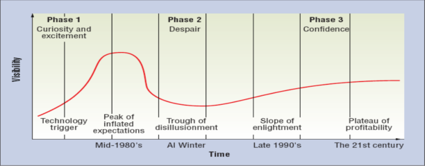

Deep learning
An introduction for the layperson
Giorgio Sironi - SET@eLife
(if you're reading this on your laptop, press S for notes)
Talking about one of the buzzwords of 2016, trying to be comprehensible for a person with a scientific or technical background and without lacking rigor.
Who is this man?
Lee Sedol, the Go world champion, who has recently lost 4-1 against AlphaGo, a Google Deepmind program built in London.
Go is a very complex game - its board is 19x19 - and has a branching factor much larger than chess. After Deep Blue beat Kasparov 3.5-2.5 at chess in 1997, go became the next challenge for game-playing AIs.
AlphaGo is not a program that could be written by a human and a keyboard; it was built with current state-of-the-art machine learning (and buzzword): deep learning. What does that mean? We have to rewind time a bit to fully understand it.
Once upon a time, the Turing machine (and its practical implementation, the computer) was invented.
Computers were as large as rooms with a fraction of the power that your watch has today. But since they were capable of executing arbitrary programs, people started to think about complex tasks...
We propose that a 2 month, 10 man study of artificial intelligence be carried out during the summer of 1956 at Dartmouth College in Hanover, New Hampshire. The study is to proceed on the basis of the conjecture that every aspect of learning or any other feature of intelligence can in principle be so precisely described that a machine can be made to simulate it. An attempt will be made to find how to make machines use language, form abstractions and concepts, solve kinds of problems now reserved for humans, and improve themselves. We think that a significant advance can be made in one or more of these problems if a carefully selected group of scientists work on it together for a summer.
John McCarthy (LISP), Claude Shannon (information theory), Marvin Minsky et al, 1956
This was the seminar were the term "Artificial Intelligence" was invented.
The perceptron
One of the advances that came out of those years (1957) was the perceptron. It's inspired by what was known about human neurons at the time: they fire once they reach their activation potential, as non-linear systems.
The perceptron tries to reproduce a function of many variables. The inputs are real numbers, and they are linearly combined with constants called weights, multiplied to each of them. `f` is called activation function and it's the non-linearity, in the case of the perceptron it's a simple step function that is 1 when its input is positive and 0 when its input is negative. Later it was changed to a sigmoid (1 / (1 - e^-t)) because it's differentiable
Training a perceptron
x1
x2
ŷ
y
e
0
0
0
-0.1
0.1
0
1
0
0.2
-0.2
1
0
0
1.1
-1.1
1
1
0
0.9
0.1
To use a perceptron in practice, we need to find what its weigths should be. For this, we use a training set: lots of examples of the function we want to mimic. Given a large enough training set, we hope to learn good values for the weights that will generalize to new inputs not in the training set.
Given some values for the weights, we can calculate for each example an output y which is close (or not) to ŷ, and an error equal to the difference between the two.
This is an AND function: only 1 when both inputs are 1. Not represented here is an x0 term for each example called bias, which is always 1: it gives a constant term to the linear combination.
Derivatives
When we start from a random set of weights, we want to understand how we should modify those weights when we are shown a new example, complete with input and expected output. If what we see here is an error function like (ŷ - y), w0 will place the output in some place of the curve, usually not when this error is minimum. For example, if AND(1, 1) is 0.4 the error is 0.6. If we compute the derivative of the error function, we find that:
- it's 0 in the minimum
- it's positive if we have offshoot a minimum
- it's negative if we are before a minimum
Therefore the derivative of the error with respect to a weight is an indication of how we should update the weight:
- do nothing if we are in a minimum, anything will worsen the error
- subtract something off the weight if we are to the right of a minimum
- add something to the weight if we are to the left of a minimum
These are all local minima!
Perceptron learning rule
for each example x:
y = f(w * x) // * is a vector product
e = ŷ - y // positive error, negative derivative
for each weight i:
wi = η * e * xi
Suppose we want to learn from one example at a time, showing them in sequence to our perceptron.
We compute the actual value the perceptron is calculating, which will probably be off. Then we calculate the error. A positive error means a shortfall, so a negative derivative.
We update the weight with a term proportional to the derivative, which is just e * xi (simplification, learning rules can be more complex depending on the activation step)
Linear boundaries
A single perceptron can only get you so far. XOR is a common example of a function which is not linearly separable and hence cannot be learn by a perceptron. However, if you start connecting perceptrons to each other...
Networks
Fortunately, we can build an actual neural network by feeding the output of a perceptron as the input of another. These structures are commonly separated into layers (at least in non-recurrent neural network): one input layer, one or many hidden layers, one output layer.
To traing this network we use a generalization of the perceptron learning rule, called backpropagation, in which at each iteration we first update the weights of the output layer, than the ones of the preceding layer, and so on; each layer using the weights of the next layer as input. Theorems say that a network with 1 hidden layer can approximate any real function of real variables, so we stick to 1 hidden layer, why making it more complex?
In from three to eight years we will have a machine with the general intelligence of an average human being. -- Marvin Minsky, 1970
At some points the predictions got really optimistic.

Throughout the 90s, neural network interests (conference attendance, number of papers, investment) declined as other methods gave more accurate results on standard problems. Support vector machines were considered state of the art until 2010.
The Hype Cycle is a classic model showing how a technology can go through a peak of inflated expectation to crash and burn later. It takes much time for enlightement to arrive and to get to a trustable, productive usage of the technology in question. Unless we are in a new peak of expectations...
Deep neural networks
Here we see a convolutional neural network for the recognition of hand-written digits, one of the standard problems against which new approaches and models are measured. The pixels of a 32x32 image of the digit have a luminance value from 0 to 1. They are connected to the input layer, which is not fully-connected but is a convolution, a mathematical operation that makes each neuron of the next layer the combination of a (5x5) square pixel around its position.
The next layer is a subsampling layer, which divides the previous layer in 2x2 squares and takes the maximum (or another function) in the set of the convolutional neuron values. More layers are added on top... until we get to the output layer, consisting of 10 neurons corresponding to the different classes, the 10 digits from 0 to 9. The maximum value wins as the input image is classified into that set.
A lot to learn
possibly millions of weights
which kind of layers work best for this problem?
how many layers should we stack into the network?
vanishing gradients slow down training of layers far from the outputs
Some of the problems can be solved by sheer computational brute force: learning the weights of such a complex network with enough GPU in your datacenter or private cloud. Other need more theory, literature and experimentation: the convolutional and subsampling layers have been proven to work in the field of image recognition, but every domain can be different.
AlphaGo figures
On training set: This data set contains 29.4 million positions from 160,000 games played by KGS 6 to 9 dan human playersOn training time and resources: The value network was trained for 50 million mini-batches of 32 positions, using 50 GPUs, for one week.
These are the figures when it comes to brute force. You need a lot of training data *and* of computing resources. That puts companies like Google and Facebook in an optimal position to fund this research and to use its results, which is why many of the deep learning gurus like Yann LeCun and Geoffrey Hinton now work there.